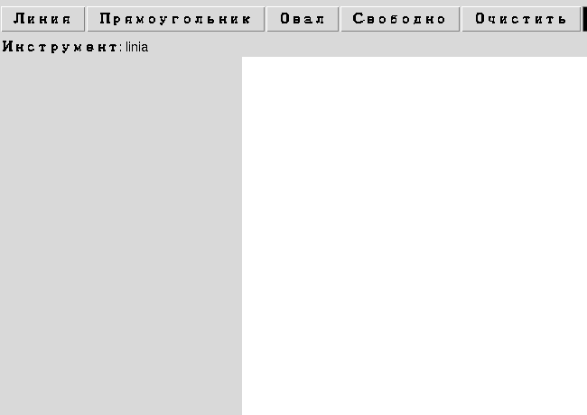
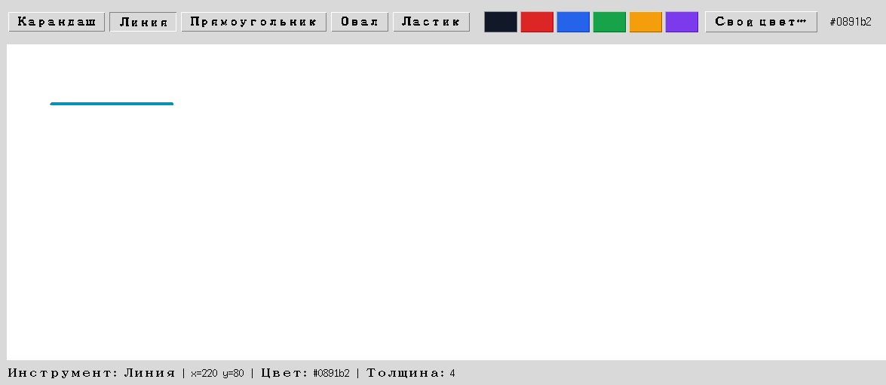

Глава 18 · Инструменты рисования
Система цвета
Шесть быстрых цветов и colorchooser для любого другого — цвет нужно видеть, а не только читать hex-код.
Цвет нужно видеть, а не только читать в коде
Шесть цветов палитры финального приложения — не абстрактные строки, а конкретные оттенки:
Чёрный
#111827
#111827
Красный
#dc2626
#dc2626
Синий
#2563eb
#2563eb
Зелёный
#16a34a
#16a34a
Оранжевый
#f59e0b
#f59e0b
Фиолетовый
#7c3aed
#7c3aed

Свой цвет — через colorchooser
Готовая палитра — это только шесть вариантов. Модуль tkinter.colorchooser
открывает нативный системный диалог выбора любого цвета:
custom_color.py
from tkinter import colorchooser
def choose_custom_color(self):
_rgb, hex_color = colorchooser.askcolor(color=self.state.color, title="Выберите цвет")
if hex_color is not None:
self.set_color(hex_color)🔶 Схема диалога (не настоящий скриншот)
askcolor() может вернуть (None, None)
Если пользователь нажимает «Отмена»,
askcolor() возвращает (None, None), а не какой-то цвет по умолчанию. Код обязан проверить hex_color is not None перед использованием — иначе следующий вызов, ожидающий строку вроде "#7c3aed", получит None и упадёт с ошибкой.
Практика: палитра и пользовательский цвет
Модуль tkinter открывает нативное окно Python — выполните локально в VS Code, PyCharm или Jupyter
Практика выполняется локально